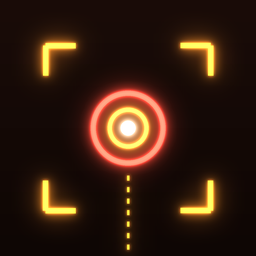

Targets slide across the range in lanes; your muzzle at the bottom fires straight up. Tap so the shot meets a target dead centre. Every hit shows how many milliseconds early or late you fired; three misses end the run.
How do I play?
Tap anywhere to fire. The shot travels straight up, so fire a moment before a target crosses the centre column. A shot that hits nothing, or a target that escapes, counts as a miss; the third miss ends the run.
What do the numbers mean?
The big number is how many milliseconds early or late your last hit was. AVG MS is your average this run; the results screen also shows your hit rate and whether you tend to fire early or late.
Where are the rankings?
Tap LEADERBOARD on the start or results screen to open the Game Center leaderboard of most hits in a run. Your best is sent automatically when you are signed in to Game Center.
Where is my progress?
Your best run and sound setting are kept on your device only.
Questions and feedback: jiezhou0731@gmail.com